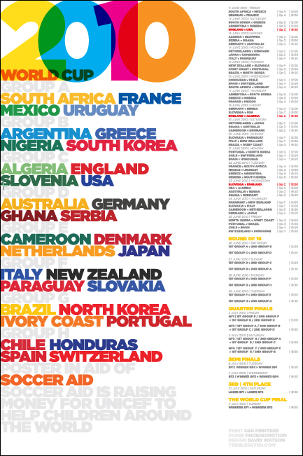

Scoring poster — grid calendar layout with score-entry spots.

Schedule poster — linear layout.
Background note. A later Trebleseven blog post at
trebleseven.com/2014/10/unicef-socceraid-world-cup-poster/ (now 404)
appears to have been about a 2014 UNICEF Soccer Aid piece — unrelated to the
2010 calendar but the likely source of the 2014 date confusion. The calendar
poster itself was a 2010 one-off and was never repeated for later tournaments.